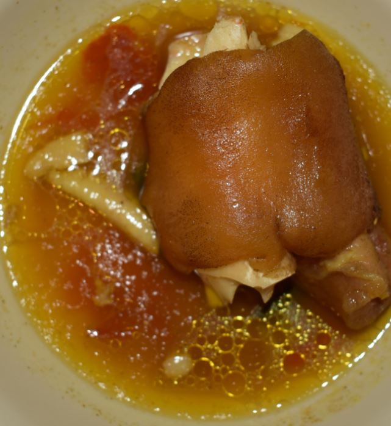

A traditional Ugandan recipe. It is both a royal dish and a fairly common dish cooked especially during the holidays. Created in 1887 by the personal chef of a King - Kabaka Mwanga, Made of beef, irish wrapped in banana leaves
€ 6.50

Leaves of cowpeas and atigo (wild vegetable that is related to okra). The sauce for eboo includes peanut butter, curry powder, and salt. Serve with posho, sweet potatoes
€ 4.80
Fish Stew, Tilapia Ugandan (Ngege), with Carrots Tomatoes Onions Green Peppers, served with Rice
€ 8.90

A traditional Ugandan recipe. It is both a royal dish and a fairly common dish cooked especially during the holidays. Created in 1887 by the personal chef of a King - Kabaka Mwanga, Made of Chicken, irish wrapped in banana leaves
€ 6.50

Mixture of beans, beef, matooke (banana), rice, irish potatoes, french beans. Good for a quick lunch at low cost
€ 5.20

This is a more relaxing lunch when you have all the time. Beans and groundnuts served with Matooke (banana), posho (maise floor), swet potatoes, rice, pumpkin, eggplant, and Nakati (Solanum aethiopicum)
€ 6.60

Molokony is cow hoof. It is best consumed hot. In fact, I don’t think you can eat it if it’s not hot. . It is also not a meal you will enjoy using a fork or chop sticks, but rather your hands. You might only need a spoon to scoop soup from the bowl. Serve with irish, rice, kalo (millet)
€ 5.00

This is (silver fish/ silver cyprinid) cooked down into a rich versatile groundnut paste/sauce with aromatics such as garlic, ginger. It is recommended for pregnant women and children to prevent/ treat malnutrition.
€ 3.30

Make of chicken pieces fried and boiled in groundnut paste. Served with rice, kalo (Millet), sweet potatoes, posho....everything!
€ 8.00
Ugandans claim that eating kikomando will make the eater strong like Arnold Schwarzenegger in his movie, Commando. Made of chapati cut into beans. The meal became popular in early 2000s amongst builders in construction
€ 2.00